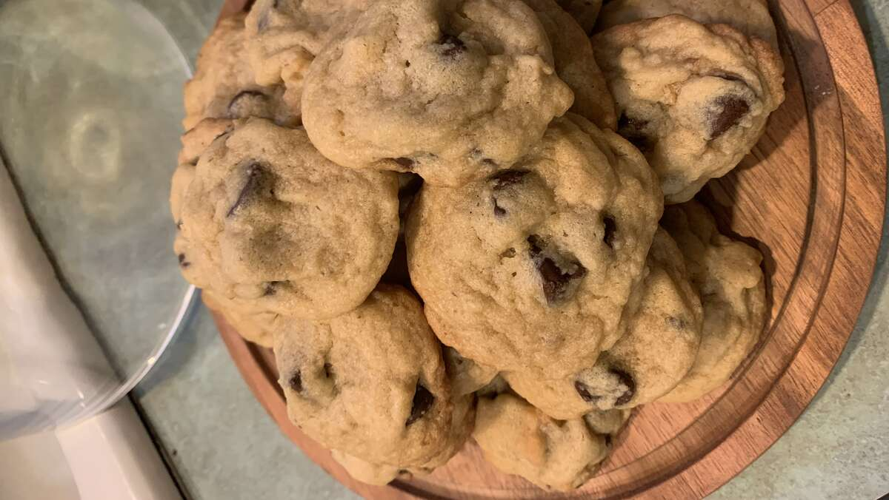

Chocolate Chip Cookies

Description
When you think about desserts or snacks, what do you think of?, you may think about
it first or after some options but cookies are one of those that always comes to
mind. Now, in this ocassion we present to you a recipe to make the best Chocolate
Chip cookies!, it is an easy, substancious, and delicious recipe to make for the
little ones at home or to offer the visitors.
Ingredients (for 24 cookies)
- 1 cup of softened butter
- 1 cup of white sugar
- 1 cup of packed brown sugar
- 2 eggs
- 2 teaspoons of vanilla extract
- ½ teaspoon salt
- 3 cups of all-purposed flour
- 2 cups of semi-sweet chocolate chips
- 1 cup of chopped walnuts
Steps
- Preheat oven to 350 degrees F (175 degrees C).
- Cream together the butter, white sugar, and brown sugar until smooth. Beat in
the eggs one at a time, then stir in the vanilla. Dissolve baking soda in hot
water. Add to batter along with salt. Stir in flour, chocolate chips, and nuts.
Drop by large spoonfuls onto ungreased pans.
-
- Bake for about 10 minutes in the preheated oven, or until edges are nicely browned.
Return to main page